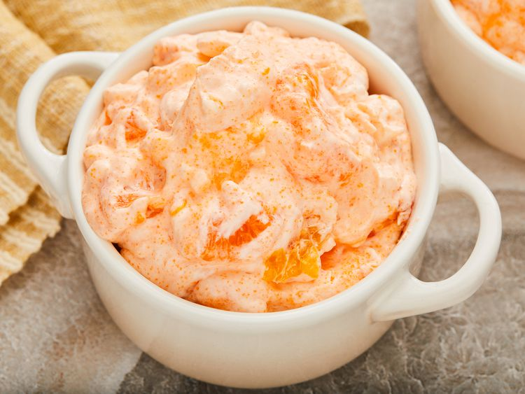

Home Page
Orange Gelatin Salad Recipe

Description
A super easy orange Jell-O recipe that takes a new spin on fruit salad!
Ingredients
- 1, 11 ounce can mandarin oranges, drained
- 1, 8 ounce can crushed pineapple, drained
- 1, 6 ounce package orange flavored Jell-O mix
- 16 ounces cottage cheese
- 8 ounces frozen whipped topping, thawed
Steps
- Gather all ingredients
- Combine oranges, pineapple, and gelatin in mixing bowl.
Mix well and let chill for 30 minutes.
- Add cottage cheese to mixture. Stir to combine.
- Fold in whipped topping. Chill and serve.